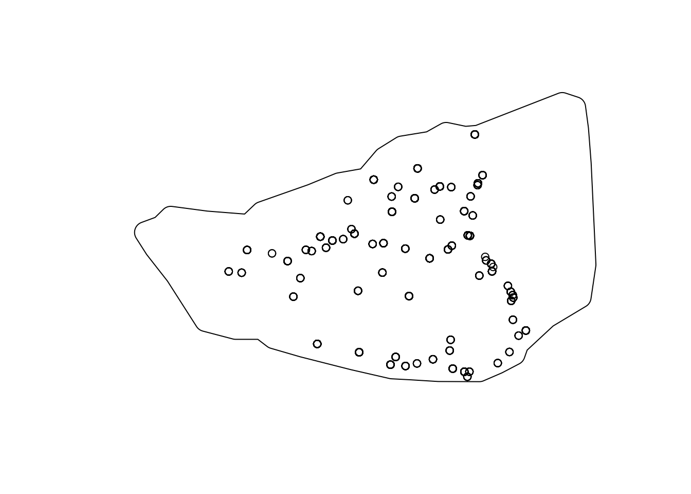

Code
library(sf)
library(spatstat)
library(maptools)To Be Added
Packages
library(sf)
library(spatstat)
library(maptools)Read sites and survey extent
# load data
# sites
sites = readRDS("../data/tab/lcp_sites_LONG_SF.rds")
# survey extent
survey = st_read("../data/vect/data.gpkg", layer = "lcp_survey", quiet = TRUE ) %>%
st_buffer(1000) %>%
st_as_sfc()
plot(survey)
plot(sites$geometry, add = TRUE)
Creat PPP Object
# create ppp window object
survey.win = as.owin(survey)
class(survey.win)[1] "owin"# create ppp with period marks
## extract coordinates
sites_coords = st_coordinates(sites)
## create data frame with marks
# marks_df = data.frame(time = as.factor(sites$time_start), size = sites$size_ha)
marks_df = data.frame(time = as.factor(sites$time_start))
## create ppp
survey.ppp = ppp( x = sites_coords[,1],
y = sites_coords[,2],
marks = marks_df,
window = survey.win)Save
## save as an R object
saveRDS(survey.ppp, "../data/tab/lcp_survey_PPP.rds")